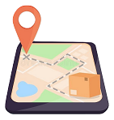

Our Services
Car Tracking
Track your trucks during the trips, from the source to the destination, step-by-step real time tracking to the path of each truck.

Goods Tracking
Track the transported goods in each truck spatially and temporally, check where and when each good was entered in a truck or gotten out of a truck. track a specific type of goods among all trips or all goods in a specific trip.

Real-time Automatic Rating
rate the driver based on his behavior and adherence to basic driving rules while driving as following the speed limit and braking, in order to ensure the safety of the products, the driver, other trucks and the surroundings.